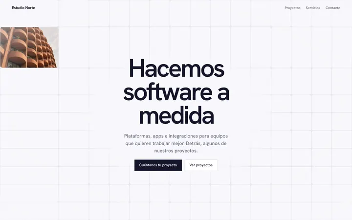
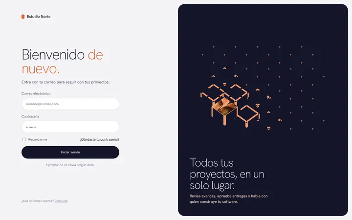
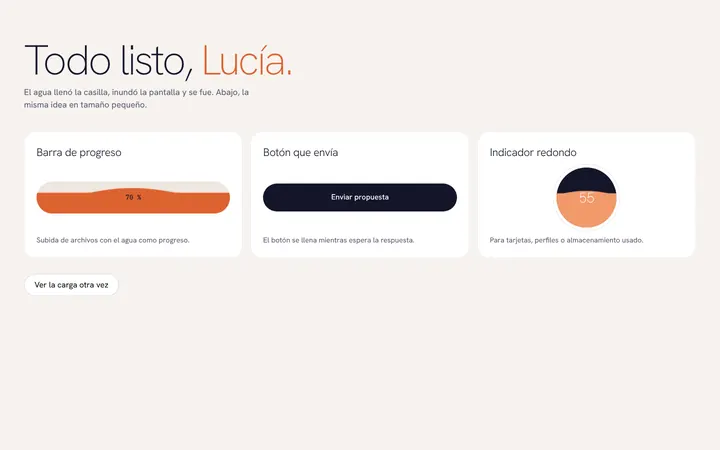
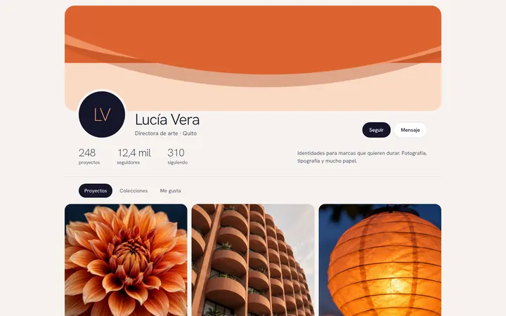
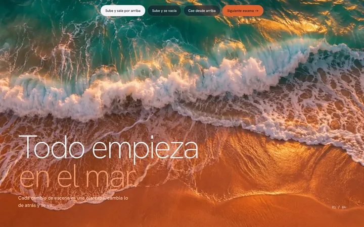
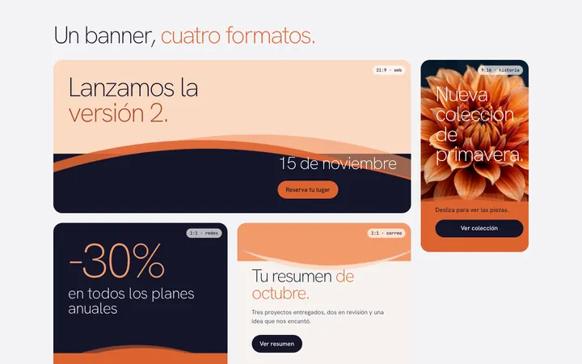
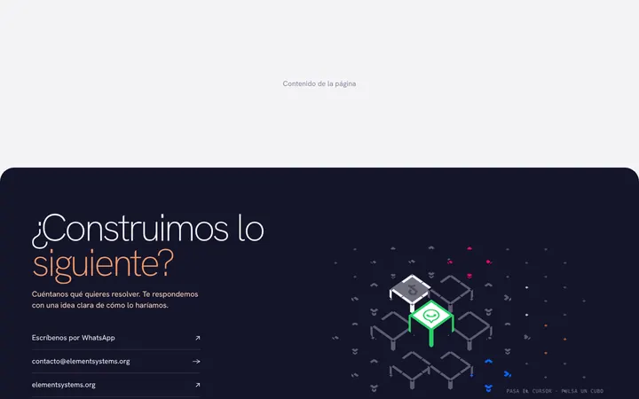
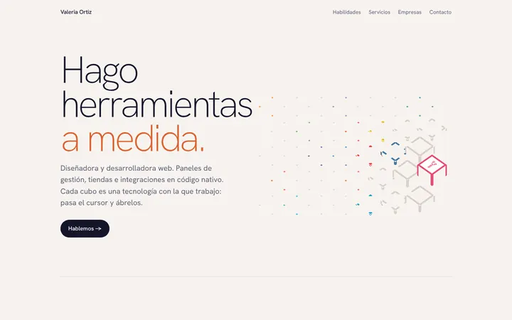
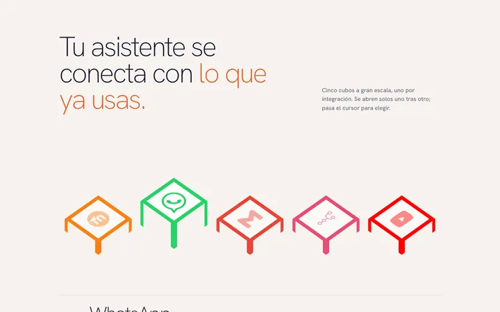

Ejemplos en contexto.
Páginas completas hechas con los componentes, agrupadas por uso. Pasa el cursor por una variante para verla y ábrela para copiar su HTML.








Fotografías generadas con ChatGPT y de Magnific: designed by wirestock - Magnific.com, designed by rawpixel.com - Magnific.com. Detalle en assets/photos/CREDITS.md.